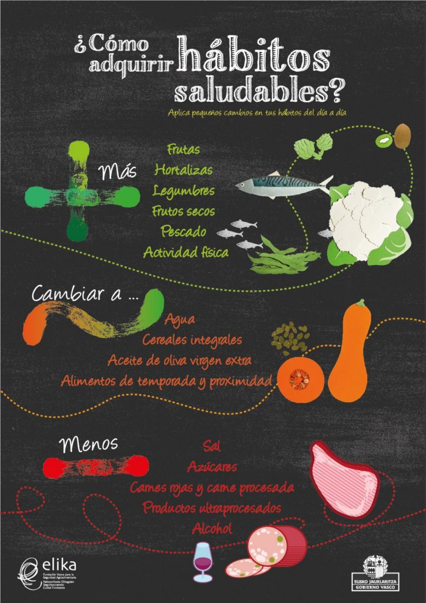

CREAR HABITOS SALUDABLES
Cuales son tus habitos
Las cosas habituales que hace, desde cepillarse los dientes hasta tomar unas copas todas las noches, pueden convertirse en hábitos. Los comportamientos repetitivos que lo hacen sentirse bien pueden afectar su cerebro de maneras que crean hábitos que más tarde pueden ser difíciles de cambiar. Los hábitos con frecuencia se vuelven automáticos, ocurren sin pensarlo mucho.
"El primer paso para cambiar su comportamiento es crear conciencia sobre lo que hace regularmente", explica la Dra. Lisa Marsch, experta en el área del cambio de comportamiento en Dartmouth College. "Busque patrones en su comportamiento y lo que desencadena los hábitos poco saludables que desea cambiar".
Tal vez come demasiado mientras ve televisión, o fuma junto con un amigo en los descansos, incluso cuando no desea un cigarrillo. "Se pueden desarrollar formas de alterar esos patrones y crear otros nuevos", dice Marsch. Por ejemplo, coma comidas con la TV apagada o reúnase con sus amigos para actividades saludables, como hacer caminatas en los descansos.
 visita el Enlace Web